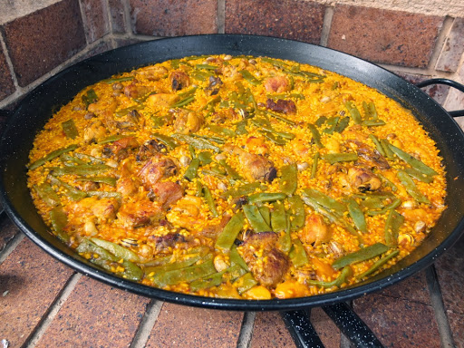

Valencian Paella

Descritpion
Lemon chicken is the name of several dishes found in cuisines around the world which include chicken and lemon. In Canadian- and British-Chinese cuisine, it usually consists of pieces of chicken meat that are sautéed or battered and deep-fried and coated with a thick, sweet lemon-flavored sauce. The Chinese restaurant of the Panda Hotel in Tsuen Wan, Hong Kong used to serve its version of lemon chicken with the chicken pieces coated in batter, then rolled in almond slivers and deep-fried and served with the lemon-glaze sauce.
Ingredients
- 1500 g of Bomba rice
- A free range chickennn
- Half rabbit
- 500 g of flat green beans
- 500 g of garrofo
- 500 g of snails
- Olive oil
- Paprika
- Crushed tomato
- Saffron
- Rosemary
- Salt
Instructions
- Fry the chicken, the rabbit, the snails and the green beans in the paella. Season it with the paprika and the salt.
- When everithing is weel cooked we add the crushed tomato.
- Add three times more water than the volume of rice. And let it 30 minutes. Then we add the saffron.
- Then we add the rice well distributed and let it cook 20 minutes.
- When the rice is cooked let it rest and then serve it.